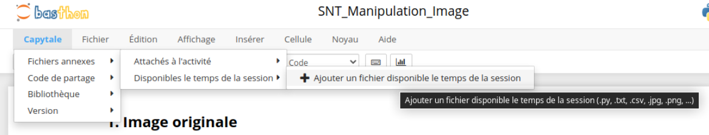

Activité 1 : modification d'une image en Python⚓︎
Nous allons jouer avec les pixels de l'image ci-dessous.

1. Ouverture de l'activité Capytale.⚓︎
Cliquez sur ce lien.
Vous aurez besoin de vos identifiants Educonnect, car Capytale est un service hébergé par LycéeConnecté.
2. Modification des couleurs de l'image fleur.jpg.⚓︎
Principe
- On parcourt l'image pixel par pixel. Pour chaque pixel :
- On récupère ses composantes RGB dans des variables
r,g, etb. - On crée 3 nouvelles variables
new_r,new_g, etnew_bà partir (ou pas) des valeurs originalesr,g, etb. - On modifie le pixel actuel avec ces nouvelles composantes
new_r,new_g, etnew_b.
Si on souhaite travailler avec sa propre image :⚓︎

Cliquer sur Capytale / Fichiers annexes / Disponibles le temps de la session / Ajouter un fichier disponible le temps de la session.
3. Modification des pixels suivant leur couleur d'origine⚓︎
La condition «Si le pixel est blanc» se traduit dans notre code par le test :
1 | |
Essayez de modifier uniquement les pixels blancs de notre image (pour les rendre bleus, par exemple).